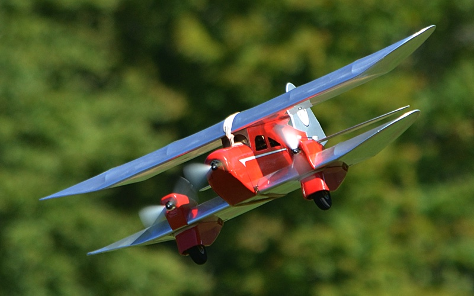
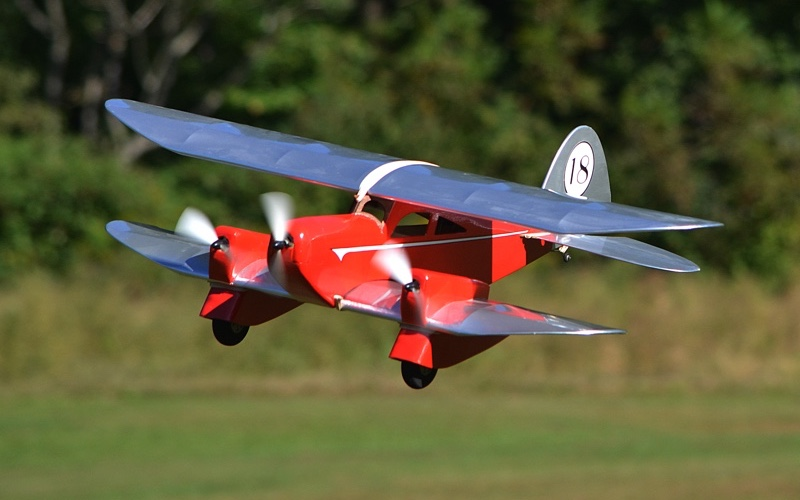
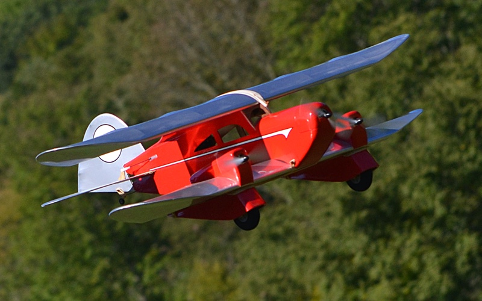
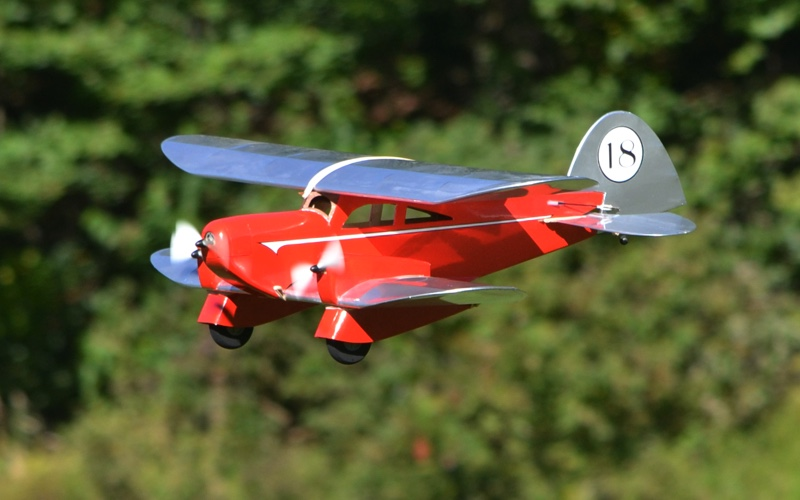
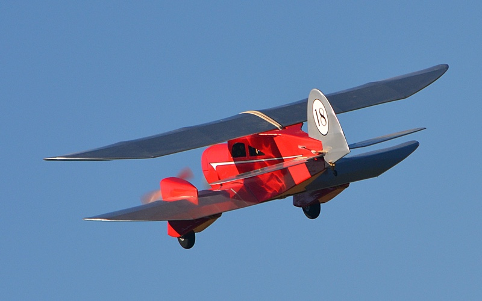

| This "new" model was a long time coming, and began with my 2001 review of Andy Clancy's Stagger Bee biplane kit. I had a lot of fun with that model, and still love its whimsical silhouette. After finishing the review, I mused a bit with Clancy about building another one as a trimotor, as those big, funky landing gear spats seemed to be calling for a pair of nacelles above them. A few days later I had another kit in hand, and jumped right in. | |
Click the smaller images for larger views in a new tab or window |
Most of us were flying brushed motors at that time, with nickel cadmium or nickel metal hydride batteries. Brushless motors were just starting to appear and were expensive, while Lithium Polymer batteries were still a couple of years in the future.
I would need three motors, and a set of relatively inexpensive Speed 400s turning Gunther props seemed like a good idea. In addition to adding the nacelles, I also stretched the wings, following Clancy's original testing. With eight ounces of anemic motors on board, and a larger battery to drive them all, a few extra squares made sense. In the end the wing spans grew from 29 inches and 24, to 35 and 29, and I had picked up 110 square inches. |
|
Unfortunately, a healthy dose of life's distractions kicked in shortly thereafter, and despite it being nearly done, I never plugged in the covering iron.
The trimotor Stagger Bee languished in various dusty corners of my workshop for the next 17 years. And then, just before the 2018 NEAT Fair, I found myself looking over the airframe yet again. I knew I couldn't get it done for that show, but decided it was finally time for the Stagger Bee to move forward. |  |
|---|---|
|  | |
|
I had the entire airframe, as well as a set of 7.2V Speed 400 motors that I had collected for this project's "someday". One issue was the Gunther props, as I could only find one in my stash. A quick email to a few friends solved that concern, and several more came home with me after the NEAT Fair that year. At this point I knew that I had to have it ready when we all got together again in 2019.
And I nearly made it. | |
|  | Most of that next year was dedicated to other projects, and I finally turned my attention back to the Stagger Bee with a couple of weeks to go. I wanted to stick with the Speed 400 motors, so as to reflect the timeframe when this project began. Another advantage of using old tech is that it comes cheap. Speed 400 motors originally sold for around $10 each. These three motors were culled from swap meet scrap bins over the last 5 years or so, and I don't think I have more than $2 in the set of three. |
| With the woodwork essentially done, I needed just a few evenings of installing the power and radio, before moving on to covering. I finished the flying surfaces at home, and covered the fuselage late one night in our flight line tent while at NEAT 2019. | |
|
No, it did not fly that weekend. I did give it a try, though without properly checking the CG. I had checked before covering and installing the battery tray, and in all the weekend's excitement, I foolishly never checked it again. When it came time to throttle up I also quickly regained my appreciation for Clancy securing all the components with rubber bands.
I have since moved the battery forward and found it every bit as entertaining in the air as I had hoped throughout my years of procrastination. And for those wondering, yes. Much like the Splash-E, the ersatz racing number on the rudder does represent all the years between building the airframe and its first flight. |  |
| If you want to build your own Stagger Bee, or any of Clancy's other classic, whimsical designs, there is great news afoot. Clancy has returned to the model airplane market with updated, laser cut versions of his previous kits. As of March 2020, kits for his original Lazy Bee is available again, and he assures me that we will see his other designs soon as well. In addition, there are several new Clancy designs in development. More information is available on the Clancy Aviation web site. | |
| Finally, I would be remiss for not expressing my appreciation for Terry Dunn and his fine work on the flight photos, which he captured at NEAT 2020. Thanks Terry! | |
| Stagger Bee Trimotor Specs | ||||||
| Wing Span | - | 35 / 29 in | Length | - | 30 ½ in | |
| Wing Area | - | 564 sq in | Motor | - | 3x Speed-400 | |
| Wing Loading | - | 7.4 oz/sq ft | Prop | - | Gunther 5 x 4 ½ | |
| Cube Loading | - | 3.75 | Battery | - | 2S 2000mAh | |

Copyright 2020, Thayer Syme, all rights reserved.